Стилистика Arctic Editorial в палитре «Кобальтовый лёд»
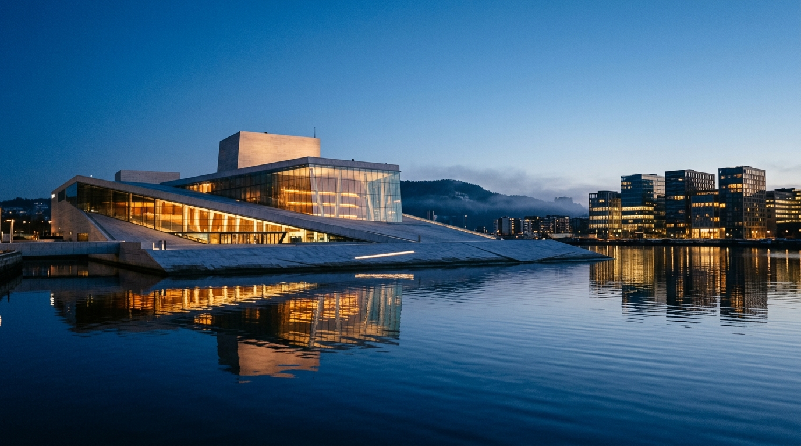
OSLАрхитектура Оперного театра и набережной в норвежский «синий час» с отражениями и тёплым вечерним светом.
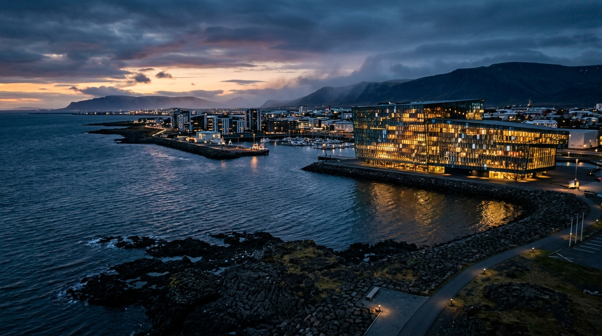
KEFСтеклянный фасад концертного зала Harpa и тёмное вулканическое побережье под атмосферным арктическим небом.
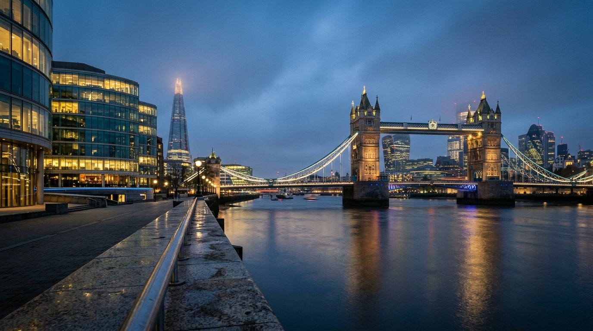
LHRНабережная Темзы в сумерках, панорама современного Сити и мягко подсвеченный силуэт Тауэрского моста.
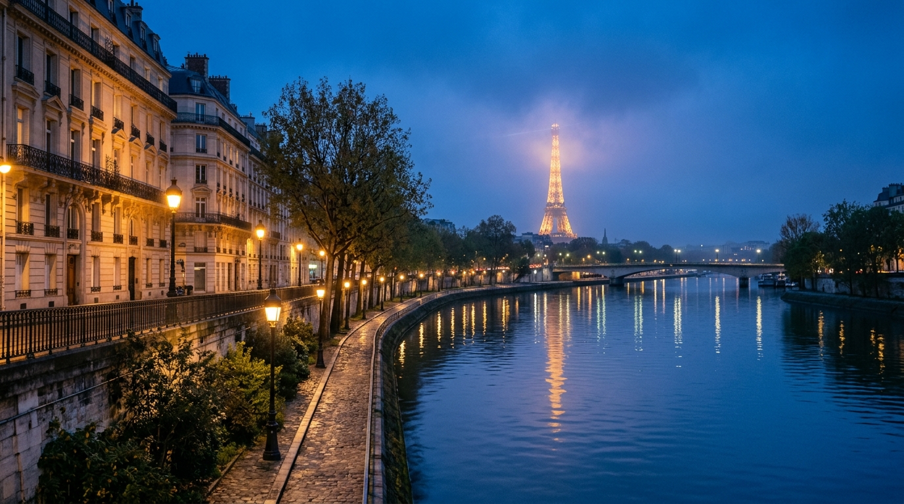
CDGНабережная Сены с классическими фасадами, мягким светом старинных фонарей и сияющей в тумане Эйфелевой башней.
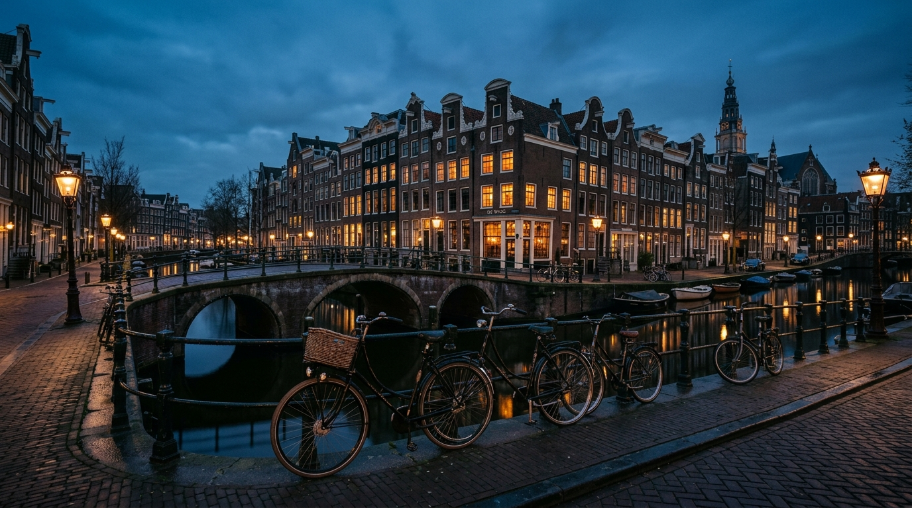
AMSИсторические каналы и мосты с тёплым светом в окнах особняков и романтичной вечерней атмосферой.
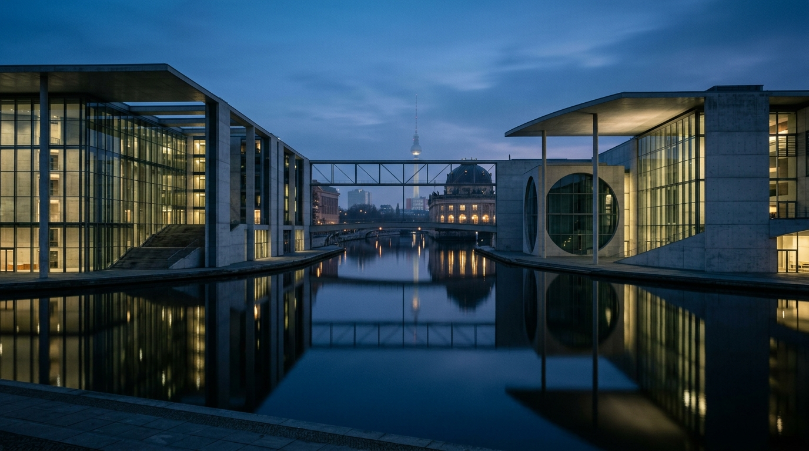
BERСтрогая геометрия правительственного квартала на реке Шпрее с чистыми зеркальными отражениями в воде.
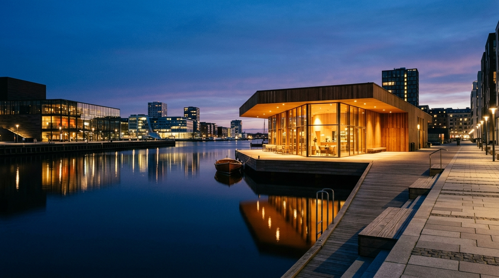
CPHСкандинавский минимализм гавани, тёплые деревянные акценты павильонов и гладь датского пролива.
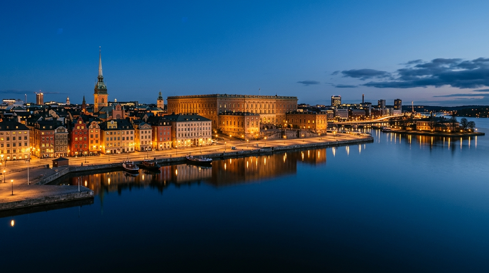
ARNПанорама Гамла-Стан и королевского дворца над зеркальной балтийской гладью в глубоких синих сумерках.
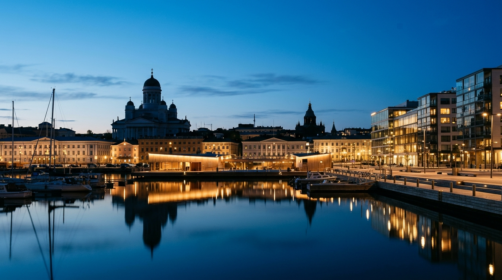
HELЮжная гавань с силуэтом Кафедрального собора, гранитными набережными и сдержанной северной элегантностью.
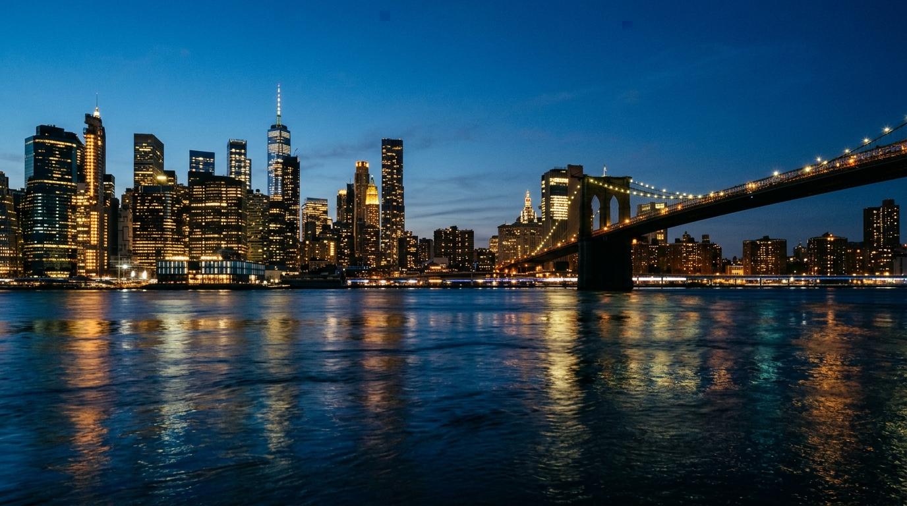
JFKМанхэттен с огнями небоскрёбов и Бруклинским мостом над тёмной водой Ист-Ривер в вечерний час.
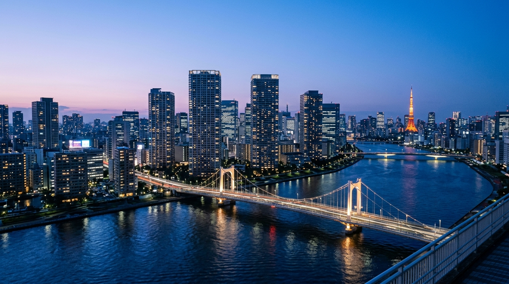
NRTВечерний Токио с мостом через реку Сумида, деликатным неоновым сиянием и кобальтово-лавандовым небом.
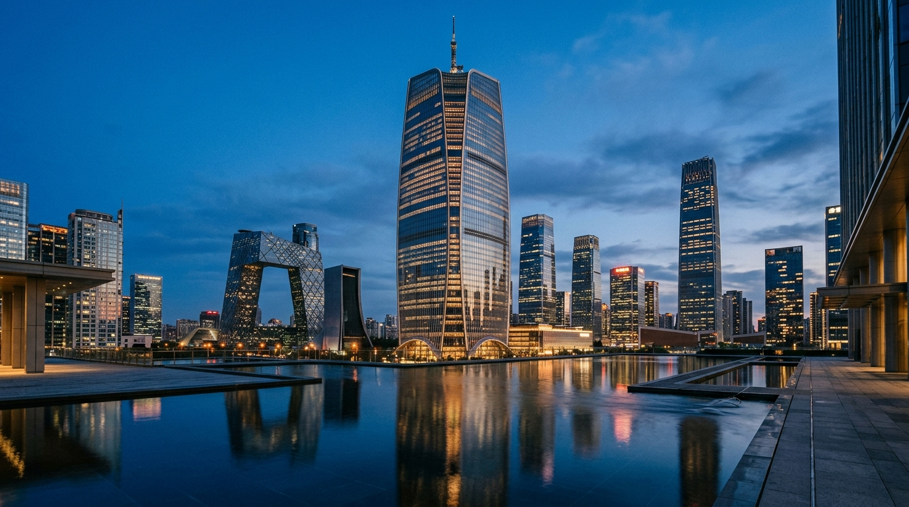
PEKФутуристические башни делового центра с тёплым внутренним светом и отражением в зеркальном бассейне.
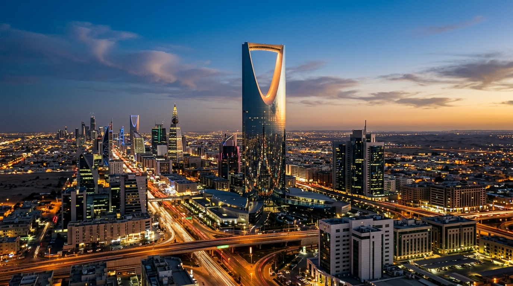
RUHСилуэт башни Kingdom Centre и сверкающие магистрали оазиса в золотисто-сапфировом вечернем свете.